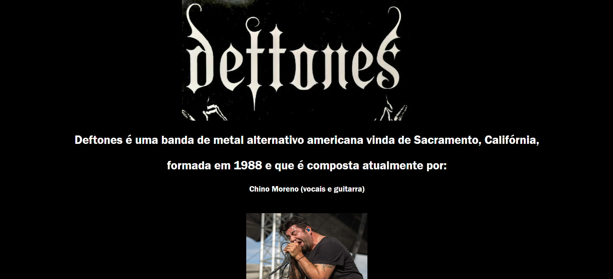
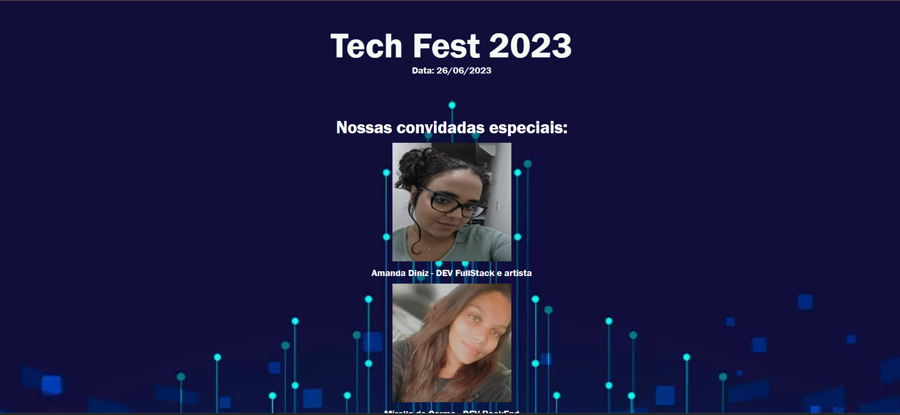
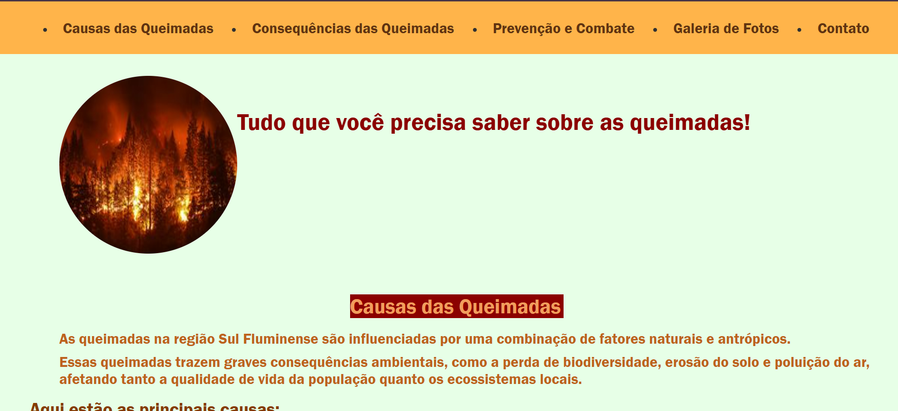
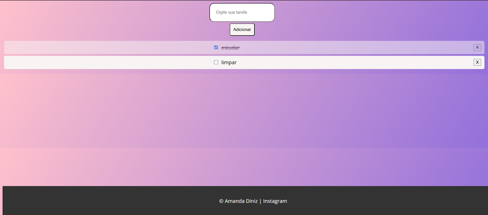
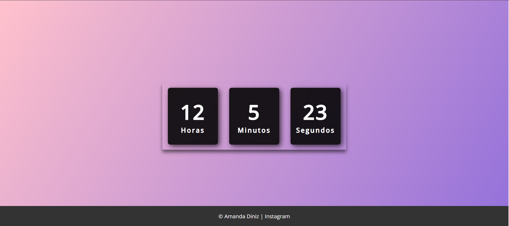
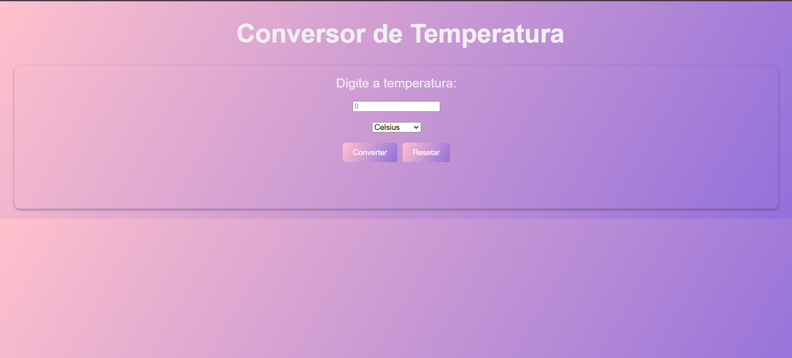

Hi, i'm Amanda.
Engenheira de software e Técnica em Informática
Meus projetos
Código Fonte

....Este site foi desenvolvido para a banda Deftones. Ele apresenta informações sobre o álbum mais famoso do grupo, detalhes sobre os integrantes da banda e um player que permite aos visitantes ouvir a música mais reproduzida deles no Spotify.
Código Fonte

....Este site foi desenvolvido com o propósito de divulgar um evento fictício. Ele inclui um link para inscrições, bem como um link com sugestões das melhores opções de hospedagem na região. Além disso, apresenta imagens das palestrantes e o cronograma completo do evento.
Código Fonte

....Este site foi desenvolvido para conscientizar sobre as queimadas. Ele apresenta informações detalhadas sobre suas causas e consequências, métodos de prevenção e formas de combate. Além disso, inclui uma ampla galeria de fotos ilustrativas e uma lista de contatos importantes relacionados ao tema.
Código Fonte

....Este site foi desenvolvido para realizar a contagem de caracteres de forma prática e intuitiva. Ele possui uma interface amigável e conta com um botão de "reset" para facilitar a reutilização da ferramenta.
Código Fonte

....Este site foi projetado para funcionar como uma lista de tarefas (To-Do List), permitindo que o usuário adicione, exclua e marque tarefas como concluídas de maneira simples e eficiente.
Código Fonte

....Este é um site simples, porém funcional, que exibe horas, minutos e segundos em tempo real, proporcionando uma experiência prática e direta para acompanhar o horário.
Código Fonte

....Este site foi desenvolvido como um conversor de temperatura, permitindo a conversão prática entre graus Celsius e Fahrenheit, e vice-versa. Ele oferece uma interface simples e intuitiva para facilitar o uso.